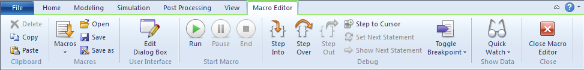
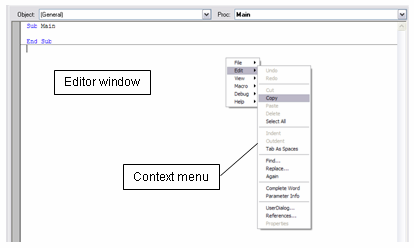
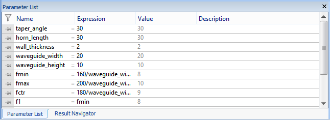
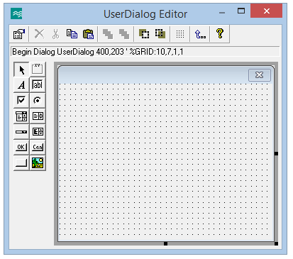
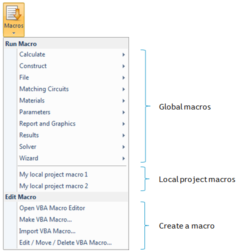
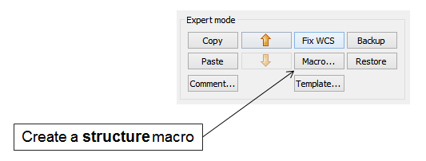
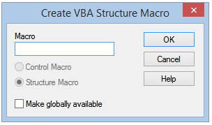

|
|
Variables, Data Types and Type Conversions
Applications, Objects and Their Methods
Graphical User Interface Builder
Mathematical Functions, Operators and Constants
Concepts of Macro Programming in CST Studio Suite
Global Macros and Library Path
The following sections start by providing general information on the VBA-based macro language before the actual integration into CST Studio Suite is discussed. The explanations are supported by a variety of examples which should assist you in building your own macros. We strongly recommend you work through this introduction, which should only take a few hours, to obtain a good working knowledge of macro programming in general. The syntax of the BASIC interpreter is explained in the WinWrap Basic Language Reference.
CST Studio Suite is implemented as an OLE automation server. A VBA Application Object can be used to control the program. Each part of the program can be controlled by special VBA objects:
|
|
|
|
|
|
|
|
|
|
|
|
|
|
|
|
|
You can open the VBA development environment by choosing Home: Macros > Macros > Open VBA Macro Editor  .
.
The development environment consists of a Ribbon tab and an editor window as shown below:

In addition to the Ribbon tab, the editor also features a context menu (opened by pressing the right mouse button) which contains more tools such as find, replace, etc.

You can easily access the VBA online help system from CST Studio Suite by selecting Help > Help Contents from the main window.
The contents of this help system are divided into three different sections. The first section provides reference information on the basic VBA language elements. A second part contains specific information on the collection of CST Studio Suite objects and a detailed explanation of their methods. Finally, the third section contains examples that may be used right away or give you some ideas for developing your own macros.
Pressing the F1-key in the editor window provides some context-specific help on the keyword positioned at the mouse cursors location. If no keyword can be found, a general help page will appear allowing you to navigate through the help system.
The following shortcuts are available within the VBA editor or debugger:
|
Ctrl+N |
Open new file |
|
Ctrl+O |
Open existing file |
|
Ctrl+S |
Save current sheet |
|
Ctrl+P |
Print current sheet |
|
|
|
|
Ctrl+Z |
Undo |
|
Ctrl+X |
Cut |
|
Ctrl+C |
Copy |
|
Ctrl+V |
Paste |
|
Del |
Delete |
|
Tab |
Indent |
|
Shift+Tab |
Outdent |
|
Ctrl+F |
Find |
|
Ctrl+R |
Replace |
|
F3 |
Find or replace again |
|
Ctrl+Space |
Complete word / command |
|
Ctrl+I |
Parameter info |
|
F5 |
Run macro execution |
|
Shift+F5 |
Stop macro execution |
|
Esc |
Pause macro execution |
|
F8 |
Debug step into |
|
Shift+F8 |
Debug step over |
|
Ctrl+F8 |
Debug step out |
|
F7 |
Debug step to cursor |
|
F9 |
Debug toggle breakpoint |
|
Shift+Ctrl+F9 |
Clear all breakpoints |
|
Shift+F9 |
Quick watch |
|
Ctrl+F9 |
Add watch |
The following subsections provide a basic overview of typically used VBA language elements and should help you get started with this programming language. The online documentation contains more detailed information on these topics as well.
A VBA-script can be regarded as a collection of subroutines and functions. Each VBA program must have at least a subroutine Sub Main which will automatically be called when the program is started. The following example illustrates how other functions can be used from within this main routine:
Option Explicit
Sub Main
Dim s3 As String
s3 = MultiStr ("Hello ",4)
' This is a comment (displayed in green color)
MsgBox s3
End Sub
Function MultiStr (s1 As String, n As Integer) As String
Dim i As Integer
Dim s2 As String
s2 = ""
For i = 1 To n
s2 = s2 & s1
Next i
MultiStr = s2
End Function
You should now enter this simple example into the VBA development environment while familiarizing yourself with the editors functions. Start by selecting the corresponding button:  (F5). The program should display a message box containing a single line of text: Hello Hello Hello Hello."
(F5). The program should display a message box containing a single line of text: Hello Hello Hello Hello."
Place the cursor over a keyword for which you want to see an explanation. Pressing the F1 key will then automatically invoke the online help system showing some detailed information about the particular keyword if available.
You can now set a breakpoint at the line s2 = s2 & s1 by placing the cursor somewhere in this line and selecting the icon  (F9). Breakpoints are visualized by highlighting the corresponding line and showing a red dot at the beginning of the line.
(F9). Breakpoints are visualized by highlighting the corresponding line and showing a red dot at the beginning of the line.
Start the macro execution again by selecting  (F5). The execution should then pause automatically at the breakpoint. Once the execution is paused, you can check the current values of a variable by moving the mouse-pointer over the variable of interest. A tooltip will then appear informing you of the variables content. You may also double-click on the variable (e.g. s2) and select the option Show Data > Quick Watch > Add to Watch (Ctrl+F9) from the context menu (opened by pressing the right mouse button). The latter function automatically places a variable watch inside the watch frame on top of the editor window. This watch will then always display the current value of the variable making debugging very easy.
(F5). The execution should then pause automatically at the breakpoint. Once the execution is paused, you can check the current values of a variable by moving the mouse-pointer over the variable of interest. A tooltip will then appear informing you of the variables content. You may also double-click on the variable (e.g. s2) and select the option Show Data > Quick Watch > Add to Watch (Ctrl+F9) from the context menu (opened by pressing the right mouse button). The latter function automatically places a variable watch inside the watch frame on top of the editor window. This watch will then always display the current value of the variable making debugging very easy.
This simple example demonstrates the ability of the interactive design environment for developing, testing and executing scripts. Before you are able to completely understand the script used in the example above, we need to introduce some other important language elements.
As in every programming language, VBA offers the ability to define variables. We strongly recommend declaring all variables before using them in order to prevent naming conflicts. The statement Option Explicit at the very beginning of the script (see the example above) forces the declaration of variables before they can be accessed by the program.
Each variable must belong to a certain data type with the most important ones being Double, Integer, Long, String and Boolean.
Please note: VBA allows a very general data type called Variant. We do not usually recommend using this data type and will therefore skip it in this introduction.
Variables are declared using the Dim statement with the following syntax:
|
Dim s As String |
|
Dim d As Double |
|
Dim i As Integer |
|
Dim j As Long |
Instead of explicitly declaring the data type by using the As statement, you may also append a $ sign to the variable name to indicate that it is of a string type. The same is valid for integer (%), long (&) and double (#) data types.
Thus the following declarations are equivalent although we recommend using the first one:
|
Dim s As String |
Dim s$ |
|
Dim d As Double |
Dim d# |
|
Dim i As Integer |
Dim i% |
|
Dim j As Long |
Dim j& |
Please note: The integer data type is only 16 bits wide and thus can only contain values within the range of 32768 ... 32767. Use the long data type for storing 32 bit integer values.
All CST Studio Suite parameters which are currently defined in the project can automatically be accessed as Double variables from within the script. Problems may occur if the same names are accidentally used in a VBA script for local variables. To prevent naming conflicts, we strongly recommend always using the statement Option Explicit. Following this rule, you will automatically get an error message in the event of multiply defined variables.

You can also change the CST Studio Suite parameters from within the script by using the StoreParameter command as shown in the following code segment:
StoreParameter("width", 20)
VBA is type safe. Therefore type-conversions are sometimes necessary, e.g. when printing out a double value as a string by using the MsgBox function:
Dim d1 As Double
d1 = 1.23
MsgBox CStr(d1)
Here the function CStr() is used to convert the given argument into a string data type (Convert into String). Another quite common conversion function is CDbl(), which can be used to convert an arbitrary data type into a double, if possible. If the conversion fails, an error will occur. A much more general way to evaluate an expression and to convert the result to a double data type is to use the Evaluate() function:
Dim d as Double
d = CDbl("5") OK
d = CDbl("5+3") OK
d = CDbl("5+3a") ERROR
d = Evaluate("5+3") OK
For further information such as on how to declare array elements or how to use constants, please refer to the online help system.
One of the most powerful aspects of VBA language is the object-oriented approach, which allows the seamless combination and integration of component objects from various applications, e.g. MS Office® (Word®,PowerPoint®, Excel®,Outlook®), Matlab®, CST Studio Suite. A single script may thus access functionality from several applications at the same time.
External objects need to be created by using the CreateObject() command before they can be accessed from within the script:
Dim word as object, ppt as object
Set word = CreateObject("Word.Application")
Set ppt = CreateObject("PowerPoint.Application")
After creating an external COM object, you are able to access its methods directly from within your VBA script. For more information on its COM interface, please refer to the documentation for that particular application.
Since CST Studio Suite also features a COM interface, the corresponding objects can also be accessed by third-party applications. The following code segment shows how to start and control e.g. CST Microwave Studio from an external program using VBA:
Sub Main()
Dim studio As Object
Set studio = CreateObject("CSTStudio.Application")
Dim mws As Object
Set mws = studio.NewMWS
Dim brick As Object
Set brick = mws.brick
brick.Name "brick"
brick.Xrange 0, 1
brick.Yrange 0, 1
brick.Zrange 0, 1
brick.Create
mws.SaveAs "C:\temp\test.cst", False
mws.Quit
Set studio = Nothing
End Sub
Please refer to the online documentation for more information on the particular methods available for the COM objects provided by CST Studio Suite.
Access to the objects methods can be simplified by using a With - End With block as shown in the example below:
Sub Main()
Dim studio As Object
Set studio = CreateObject("CSTStudio.Application")
With studio.NewMWS
With .Brick
.Name "brick"
.Xrange 0, 1
.Yrange 0, 1
.Zrange 0, 1
.Create
End With
.SaveAs "C:\temp\test.cst", False
.Quit
End With
Set studio = Nothing
End Sub
Please note that in the case of nested With - End With structures, the innermost block is used.
The VBA interpreter of CST Studio Suite allows you to access its objects directly without using the CreateObject command. The methods of the application object are available as global functions, and all other objects can be used as global objects. For use in the CST Studio Suite environment, the example shown above can be simplified to the following:
Sub Main
With Brick
.Name "brick"
.Xrange 0, 1
.Yrange 0, 1
.Zrange 0, 1
.Create
End With
SaveAs "C:\temp\test.cst", False
End Sub
The VBA language offers a wide variety of flow control elements. The most frequently used ones are the If Then - Else - End If, While - Wend or For - Next statements shown in the examples below:
If Boolean_Expression Then
' IF - STATEMENT
Else
' Else-STATEMENT
End If
While Boolean_Expression
STATEMENTs
Wend
For i = 1 To n
STATEMENTs
Next i
Please find more information on these and other flow control elements in the online help which can be find in WinWrap Basic Language Reference .
Accessing files from a VBA script is rather straightforward. After opening a file for either reading or writing, you can assign a numbered stream to it which can then be used to access the file. This is shown in the example below:
Dim sline as String
Open "mydata.txt" For Input As #1
While Not EOF(1)
Line Input #1,sline
Debug.Print sline
Wend
Close #1
Open "mydata.txt" For Output As #2
Print #2, "Test Output"
Close #2
Open "mydata.txt" For Append As #3
Print #3, "Test Output 2"
Close #3
Please note: The Debug.Print method is used to generate debug text output which is written to an output window in the development environment.
Any CST Studio Suite result which is displayed in the Navigation Trees 1D Results folder should be accessed using the Result1D object rather than by direct file access. A similar Result3D object exists for the access of 3D result field data. The usage of these objects are introduced later in this section.
Find further information on file handling (e.g. checking directory contents with the Dir$ command) in the File Group of the language reference part of the VBA online help system.
You can easily create and customize your own dialog boxes by using the graphical user interface builder which you can open either by selecting the icon User Interface > Edit Dialog Box  .
.

A customized dialog box can then be created by placing user interface components on the dialog sheet. However, describing all the details of creating user defined dialog boxes is beyond the scope of this manual. Refer to the online help for more information.
Most dialogs' controls store their data as strings, so a conversion of strings to other data types may be necessary. As already shown earlier, a string can be easily converted to a double value by using the CDbl() or Evaluate() functions.
Another important source of information on this topic is the pre-loaded result templates or macros which are covered later in this document. Most of these scripts contain user-defined dialog boxes with a variety of controls.
The VBA language offers various mathematical functions and operators. If you are familiar with other programming languages, you may already know most of them.
However, there are a few functions that have a slightly different meaning when compared to other programming languages such as C or C++:
|
Sqr(a) |
Square root of a |
|
a^2 |
a * a |
|
Log(a) |
Natural logarithm of a |
|
Log(a) / Log(10) |
Logarithm of a to a base of 10 |
Refer to the help on operators and general mathematics in the online help system.
In addition to the VBA standard language elements, CST Studio Suite provides a collection of mathematical functions that are frequently used in scientific computing:
|
Pi |
3.141592654... |
|
re(am,phD) / im(am,phD) |
Real or imaginary part of a complex number (am = amplitude, phD = phase in degrees) |
|
SinD(x), CosD(x), TanD(x)
|
Sin, cos, tan with x being the angle in degrees |
|
ASinD(), ACosD(), ATnD()
|
Arc sin / Arc cos / Arc tan with the result being an angle in degrees |
|
ATn2(y,x)
|
Polar angle of the complex number x + iy measured in radian |
|
ATn2D(y,x)
|
Polar angle of the complex number x + iy measured in degrees |
|
Evaluate(x)
|
Evaluates the mathematical expression x and returns its numerical value (as double) |
|
Min(x,y) |
Minimum of x and y
|
|
Max(x,y)
|
Maximum of x and y |
|
ln(x) |
Natural logarithm of x
|
|
Other mathematical functions like Sgn(x) are listed here: WinWrap Basic Math Group.
|
|
For more information see WinWrap Basic Language Reference.
Please note: All mathematical functions can also be used in dialog box entry fields whenever CST Studio Suite allows you to enter a mathematical expression.
After introducing the fundamental concepts of VBA programming, the next sections focus on how VBA language is integrated in CST Studio Suite modules.
A few tools within CST Studio Suite can be extended by providing user-defined functions:
o Project templates to customize settings for particular structures
o Result templates for the automated extraction of simulation results
o User-defined excitation functions for transient analysis (accessed from the Excitation signal dialog box)
You can also create macros to automate common tasks. Each of these macros can be assigned to either of the following groups:
o Structure modeling macros: These macros need to be stored in the history list to ensure a proper structure update as a consequence of parametric changes.
o Control Macros: These macros do not need to be stored in the history list and are thus usually employed for post-processing calculations.
This does not apply to CST Design Studio where all macros can be considered as Control Macros.
The user-defined excitation functions are always stored as part of a certain project. The text files containing the functions VBA code have the file extension "usf".
Therefore, if the projects name is "test.cst", the file path of a user defined excitation function will be "./test/Model/3D/model.usf."
Storage of the structure or control macros can be local (within the project) or global (available for all projects). Project templates and the result templates are always stored globally.
Please note: CST Design Studio does currently not support local macros. Therefore all macros created in CST Design Studio are stored globally for all projects.
Local macros are stored as part of a particular project and obtain a numbered file extension, e.g. 000, 001, 002, etc.
Assuming the name of the project to be test.cst," the file paths of the local macros could be any one of the following: "./test/Model/3D/model.000", "./test/Model/3D/model.001," etc.
All global macros are stored in a folder named Macros located in the Global Library Path. By default, it is set to the Library folder in the CST Studio Suite installation directory.
However, when working in a group of users, you may change the location of this directory to a shared folder accessible to everyone. Each user should then specify its location by selecting File: Options > Library Path.
The file names of global macros are always built by the keyword macro and a numbered extension, e.g. "macro.000", "macro.001", etc. It is not necessary to ensure consecutive numbering of the macros.
By default, each installation of CST Studio Suite contains a collection of useful global macros. The file extension of these macros starts at 500 in order to avoid naming conflicts with your own global macros.
The following picture shows the contents of the Macros submenu in CST Microwave Studio after two macros have been created:

A macro belongs to the class of control macros if it does not need to be stored in the history list. The following list provides an overview of frequently used control macros:
Any kind of numerical post-processing of S-Parameters, farfields, probes, voltages or electromagnetic fields
Exporting the screens contents as pictures or videos in various formats
Project management, e.g. archiving models, cleaning up temporary working directories, etc.
Control and execution of computational sequences
Comparison of result data from several projects or measurements
The following sections introduce the most important building blocks used by control macros. These code segments are frequently used in the rather complex pre-loaded result templates or macros which are covered in more detail in the next chapters.
Please note: A control macro always has a * sign in front of its name, indicating that it is a control macro rather than a structure macro.
The Result1D object offers convenient access to one-dimensional result data. The following list gives an overview of which result types can be accessed using this object (refer to the online help for details on file naming conventions):
1. Result data stored as part of the project with the file extension sig, e.g. time signals, S-parameters, etc.
2. Voltage monitor data
3. Probe results
4. VSWR results, Z+Y-matrices
The Result1D object allows the corresponding file to be opened and its contents to be accessed via methods of an object-oriented manner.
Many methods of the Result1D object deliver the index of a particular element rather than its value directly (e.g. .GetClosestIndexFromX, .GetGlobalMaximum, .GetFirstMinimum). You can then access the numerical X/Y value of the indexed data point by using the objects functions .GetX, and .GetY.
The following examples demonstrate the usage of the Result1D object for various tasks. Please refer to the VBA online documentation for more information.
Example 1: Access S11 phase results which are stored in the file <project name>^cS1(1)1(1).sig
Dim n As Long, i As Long
Dim vx As Double, vy As Double
With Result1DComplex ("cS1(1)1(1)")
Dim oPhase As Object
Set oPhase = .Phase ' Open the phase of S11
n = oPhase.GetN ' Get number of frequency samples
For i = 0 To n-1
' Read all points with zero based
' indices
vx = oPhase.GetX(i) ' Get frequency of data point
vy = oPhase.GetY(i) ' Get phase of data point
Next i
End With
In order to create a new data set containing the group delay time as a function of frequency (which can be calculated from the S-parameters phase data), you would need to implement the following steps:
1. Create a new Result1D object.
2. Loop over all frequency samples, calculate delay time for each frequency sample and store its result in the new Result1D object.
3. Save the Result1D object.
Example 2: Determine the maximum return loss and the magnitude of S11 at a frequency of 33 GHz (both in dB).
Dim maxr As double, s11_33GHz As Double
Dim s11 As Object
Set s11 = Result1DComplex("cS1(1)1(1)")
Dim oMagnitude As Object ' |S11|
Set oMagnitude = s11.Magnitude
maxr = oMagnitude.GetY(oMagnitude.GetGlobalMaximum())
s11_33GHz = oMagnitude.GetY(oMagnitude.GetClosestIndexFromX(33))
maxr = 20*Log(maxr)/Log(10) ' convert to dB
s11_33GHz = 20*Log(s11_33GHz)/Log(10)
Example 3: Determine the frequency of the VSWRs global minimum.
Solver.CalculateVSWR ' calculate the VSWR and
' and store it in
' <project name>^vswr1(1).sig
Dim fmin As Double
With Result1D("vswr1(1)")
Fmin = .GetX(.GetGlobalMinimum())
' please note that this frequency is returned in
' the currently active frequency unit, e.g. GHz
' to obtain its value in Hz, you need to
' multiply it by Units.GetFrequencyUnitToSI
End With
Example 4: Calculate the real part of S11 at a certain frequency (here 0.65 GHz)
Dim s11 As Object
Dim r11 As Object
Set s11 = Result1DComplex ("cS1(1)1(1)")
Set r11 = s11.real
Dim n As Integer
Dim frq As Double
Dim real As Double
frq=0.65
n=a11.GetClosestIndexFromX(frq)
frq=0.65
n=r11.GetClosestIndexFromX(frq)
real = r11.GetY(n)
You may also access files that have been created by a VBA script using the Result1D object. However, these files must contain two columned X/Y data.
In order to access external data, you may use a code segment similar to the following:
' just copying the file in order to access it by using the
' Result1D object
With Result1D("")
.LoadPlainFile("C:\TEMP\mydata.txt")
.
.
.
End With
The Result3D object offers convenient access to 3D result file data similarly to the previously discussed Result1D object. In particular, the Result3D object allows the loading and saving of binary 3D field data in addition to some basic mathematical operations such as add, subtract, multiply, etc.
The following example demonstrates how to load 3D result field data in order to calculate a superposition of fields which is then saved as binary result field data.
Example: Calculate a superposition of 3D result fields.
Dim field1 as Object, field2 as Object
' Load the 3D result data fields "e1" and "e2"
' (e.g. modes calculated by the eigenmode solver)
Set field1 = Result3D("^mode_e_1")
Set field2 = Result3D("^mode_e_2")
' First scale field1 and field2 by scalar factors
field1.ScalarMult 2
field2.ScalarMult 1.5
' Now add field2 to field1 (field1 will be overridden)
field1.Add field2
' Finally save field1 as a new result data field
field1.Save "^combination"
Please refer to the online help for more explanations about methods available for this powerful object.
CST Studio Suite™ offers the possibility of adding two columned X/Y ASCII data files to the result tree which can then be displayed in the same way as other one-dimensional data sets. The following exemplary code segment illustrates how this can be achieved for an external data file:
With ResultTree
.Reset
.Type "XYSignal"
.Subtype "Linear"
.Title "TDR: Time Dependent Impedance Z(t) in Ohms"
.Xlabel "Time / " + Units.GetTimeUnit()
.Ylabel "Z(t)"
.Name "1D Results\TDR Results\Z(t)"
.File "C:\Data\myfile.txt"
.Add
End With
In order to compare curves by plotting them together on the same graph, both curves must have identical titles, x-labels and y-labels. Otherwise the message Incompatible result data will be displayed when both curves are selected.
In the same way, 3D field result data can be added to the Navigation Tree:
With ResultTree
.Reset
.Type "Efield3D"
.Name "3D Results\E-Field\My E-field"
.File "C:\Data\myfile.m3d"
.Add
End With
A particular item in the Navigation Tree can be easily selected using the SelectTreeItem function. This function returns a Boolean value indicating whether the specified item existed and therefore could be selected.
The name of a tree item is specified by its sequence of folders starting at the trees root with the folder names separated by \ characters, e.g.:
SelectTreeItem "1D Results\TDR Results\My Result"
You can traverse the tree starting from a particular item (e.g. the root item) by using a script similar to the following code segment:
Dim sItem As String
sItem = ResultTree.GetFirstChildName("Farfields")
While sItem <> ""
SelectTreeItem sItem
.
.
.
sItem = ResultTree.GetNextItemName(sItem)
Wend
Please note that the Navigation Trees contents are mode-dependent (e.g. results are not accessible in the mesh mode). To ensure that the program is currently not in mesh mode, use the following statement:
' ensure that the mesh mode has been switched off
Mesh.ViewMeshMode False
A few commands can be used to access the data of the currently active plot. Therefore, you should first select a particular plot by using the SelectTreeItem method before using one of the following commands:
o GetFieldVector
o GetFieldFrequency
o GetFieldPlotMaximum
o GetFieldPlotMinimum
Refer to the online documentation for more information on these methods.
Example 1: Select the fundamental 3D eigenmode and determine its resonance frequency and the field vector at a particular position. Finally, display a message box that provides the maximum value of the field.
' select the corresponding Navigation Tree item to display
' the modes electric field
SelectTreeItem "2D/3D Results\Modes\Mode 1\e"
' determine the modes frequency
dFrequency = GetFieldFrequency()
Dim xp As Double, yp As Double, zp As Double
xp = 0.0
yp = 0.0
zp = 0.0
' get the field vector at a particular location (xp, yp, zp)
' the real and imaginary parts of the vectors components
' are stored in the variables: vxre, vyre, vzre (real parts)
' and vxim, vyim, vzim (imaginary parts)
Dim vxre As Double, vyre As Double, vzre As Double
Dim vxim As Double, vyim As Double, vzim As Double
GetFieldVector(xp, yp, zp, vxre, vyre, vzre, vxim, vyim, vzim )
' display the fields maximum strength
MsgBox "Max=" + CStr(GetFieldPlotMaximum)
Example 2: Plot a tables contents and export the data to an ASCII file.
SelectTreeItem "Tables\s11"
With ASCIIExport
.Reset
.FileName "mys11.sig"
.Execute
End With
Direct access to the farfield at a particular location can easily be obtained using the CalculatePoint method of the FarfieldPlot object as shown below:
FarfieldPlot.SetPlotMode "Directivity"
FarfieldPlot.CalculatePoint (dTheta, 0, "Abs", "farfield [1]")
The third argument of the .CalculatePoint method can be any member of the following list:
"Abs"/"Theta"/"Phi"/"Axial Ratio"/"Left Polarization"/"Right Polarization"/"Th_Re"/"Th_Im"/"Ph_Re"/"Ph_Im"/"Th_Phase"/"Ph_Phase"
Note that the result obtained by the .CalculatePoint method depends on the currently selected plot mode. Make sure that the plot mode is adjusted to the desired one (directivity / gain / efield / hfield / pfield / rcs / rcssw / scale2max) by using the .SetPlotMode method before accessing the farfields data.
In addition to direct access to individual farfield data, you can also create a one-dimensional farfield plot and then export its data:
SelectTreeItem("Farfield\farfield [1]")
With FarfieldPlot
.SetPlotMode "directivity"
.Vary "theta"
.ThetaStep 25
.PlotType "3d"
.Plot
End With
With ASCIIExport
.Reset
.FileName "farfield.sig"
.Execute
End With
The following example demonstrates how to create an X/Y data file containing the vertical diagram using the .CalculatePoint method rather than exporting plot data:
Dim dTheta As Double, dValue As Double
Open "C:\Data\mydata.txt" For Output As #1
FarfieldPlot.SetPlotMode "directivity"
For dTheta = 0 To 180 STEP 5
dValue = FarfieldPlot.CalculatePoint(dTheta, 0, "Abs", farfield [1]")
Print #1, CStr(dTheta) + " " + CStr(dValue)
Next dTheta
Close #1
The main difference between structure macros (identified by their .mcs file extension) and the previously introduced command macros is that structure macros are stored in the history list after their execution. Whenever a macro becomes part of the structures construction, it is important that history updates recall the macro execution in order to fully regenerate the structure.
Structure macros may be used for various purposes at different complexity levels. However, this document can cover only some fundamental concepts on structure macro development. If you frequently need to develop such macros, we advise you to attend a training class specialized on this topic. Contact your support center for more information.
Please note that CST Design Studio does not support structure macros.
You may frequently need to change some default settings for your particular kind of application. The following list gives some examples for such default settings:
o Set the units to mil and MHz rather than use mm and GHz.
o Define a certain set of material properties
o Set the frequency range to a default of e.g. 0 - 3 GHz.
o Define farfield monitors for frequencies of 0.9 GHz and 1.8 GHz.
The most convenient way to achieve such changes to the default settings depending on the structure type is to define project templates for these devices. Such a template is simply a particular kind of structure macro and can be created as such.
You should start creating your template with an empty history list. Select File > New and Recent and select the corresponding module in order to start a new project.
Afterwards, you should perform all the frequently used steps which should later be automatically provided by the macro:
1. Select a Project Template
2. Define the units.
3. Define default materials (e.g. a set of standard dielectric materials, etc.).
4. Define the background material.
5. Define a default frequency range.
6. Define a collection of frequently used monitors.
7. Change some default settings for the mesh generation.
8. Change some solver settings.
This list can provide only some ideas on what can be customized by the template. You may include other operations as well.
Once all necessary steps have been completed, you should open the history list by selecting Home: Edit > History List. In the History List dialog box press the More >> button to enter the expert mode:

You should then select all commands to be included in the template and click the Macro button. You will be prompted to assign a name to the macro (e.g. My Defaults) and click OK.

The VBA editor will then automatically open showing the contents of the new structure macro. The first line in the macro contains a comment line with the name of the macro.
You can now call this project macro by selecting its name from the Macros menu. Once a structure macro is executed by choosing it from the main menu, it will be appended to the history list.
You can create global structure macros in the same way by activating the Make globally available option in the dialog box where you also specify the name for the macro.
Creating structure macros by selecting a couple of lines in the history list and then automatically converting this into a VBA code sequence is very convenient.
However, it is important to note that just taking a few lines out of a construction history and building a macro from this will not usually work for the following reasons:
1. The construction may depend on earlier operations in the history that are not part of the newly created macro. Therefore, pick operations may fail, or the structure elements for deletions or transformations simply do not exist. In order to avoid these problems, we recommend exporting a command sequence from the beginning of the history list.
2. Naming conflicts may occur if the macro uses shape names that have already been defined elsewhere. This problem can be solved only by adding some additional coding in regard to shape naming in the macro.
Because of these pitfalls, we do not recommend you use the macro functionality for simply re-using parts of a models history to build a new structure.
We strongly suggest exporting the corresponding parts of the existing model into a SAT file first. In a second step, you may import this file into the new project using the working coordinate system for proper placement of imported shapes. The import feature will automatically take care of possible naming conflicts and rename the imported shapes in order to avoid such problems.
The imported structure can then be modified to some extent using the Local Modification commands. Refer to the corresponding Getting Started manual for more information on this topic.
Creating parametric structure macros usually requires user-defined dialog boxes for defining structural parameters. However, these dialog boxes should appear only when the macro is called from the menu and should not be shown when the history list is processed.
This behavior can be achieved using the VBA statements BeginHide and EndHide in the structure macro. All VBA code placed between these two lines will automatically be removed from the macros code before being written into the history list.
However, the dialog box code should usually provide some parameters which will later be used in the macro. Therefore, you need to declare these parameters before the BeginHide statement. The keyword Assign should then be placed right before the EndHide command for each parameter in order to define its current value, which will then be stored as such in the history list. The following code segment shows the usage of these commands:
Dim dRadius As Double
BeginHide
' some code defining dRadius by using user dialog boxes
.
.
.
Assign("dRadius")
EndHide
After you run this code segment, the history list item will contain the following VBA code only:
Dim dRadius As Double
dRadius = 0.23 ' or whatever has been assigned to it by the user
The following list summarizes some common pitfalls in the usage of structure macros:
1. The first comment line of a structure macro must not contain an asterisk * character preceding the macros name (otherwise it would be considered as a command macro and would therefore not be stored in the history list).
2. A structure macro is appended to the history list only if it is called from the Macros menu. Running the macro in the VBA debugger by clicking the start button  will not store the macros contents in the history list.
will not store the macros contents in the history list.
3. Naming conflicts with existing parts of the project may occur which need to be addressed carefully.
The installation of CST Studio Suite contains a selection of pre-loaded global macros which are useful to automate a variety of common tasks. These macros can mainly be categorized as follows:
1. File and result handling
2. Structure generation macros
3. Creating pictures, videos and reports
4. Post-processing individual simulations
5. Post-processing multiple simulations and running parameter sweeps
You can start each of these macros by selecting its name from the hierarchical structure in the Macros menu. For CST Design Studio, however, macros are accessed from the Macros folder in the Navigation Tree.
The macros dialog boxes contain Help buttons that open the online help system providing more information.
We recommend you browse through the contents of the Macros menu to familiarize yourself with the macros already available.
Global macros are stored in the Macros subfolder of the Library Path. This path can be set by choosing File: Options > Library Path.
If you experience any problems using the pre-loaded macros, or if you have suggestions for new macros, please contact technical support 3ds.com/support
| CST Studio Suite 2022 |
|